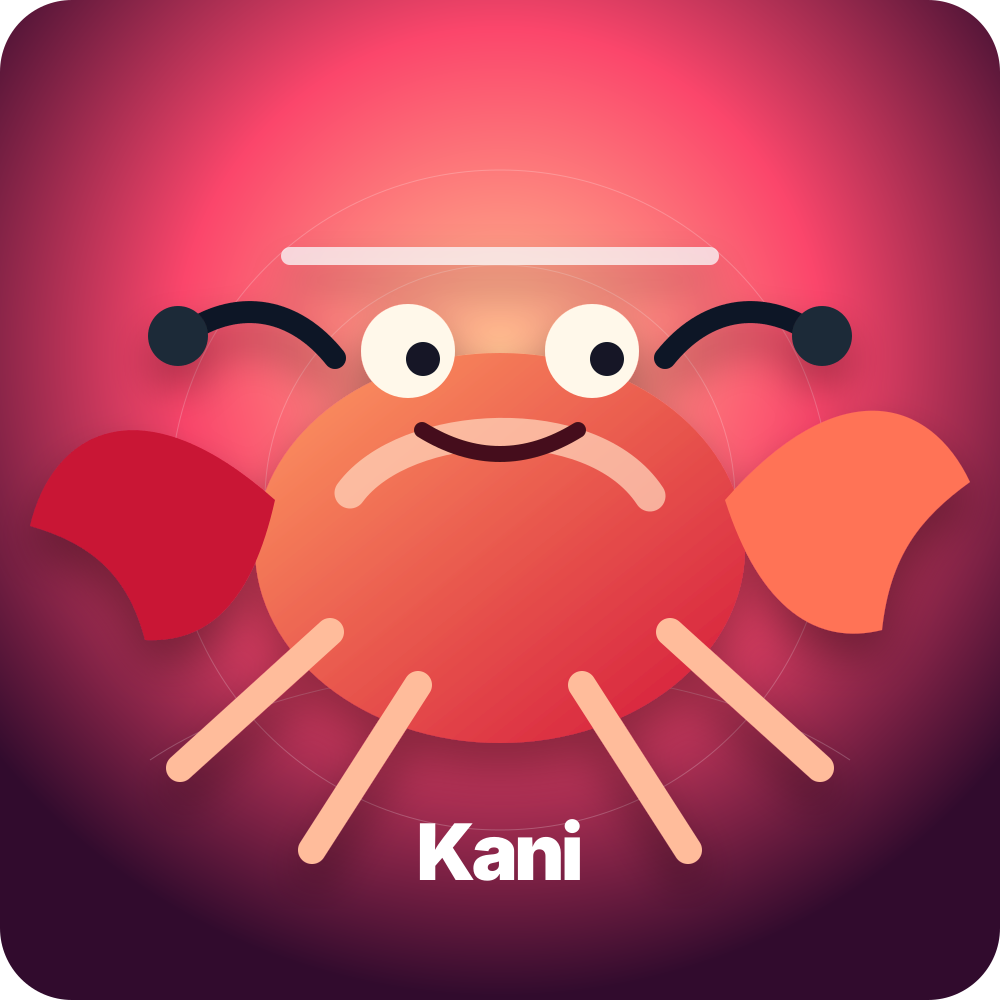
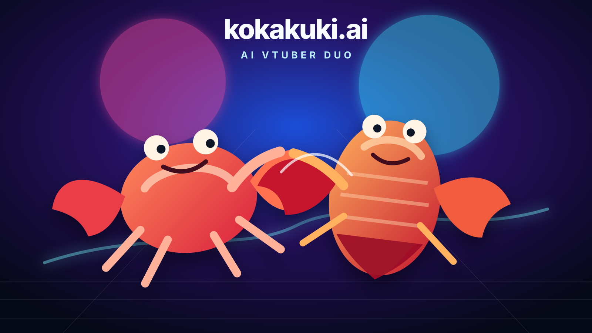
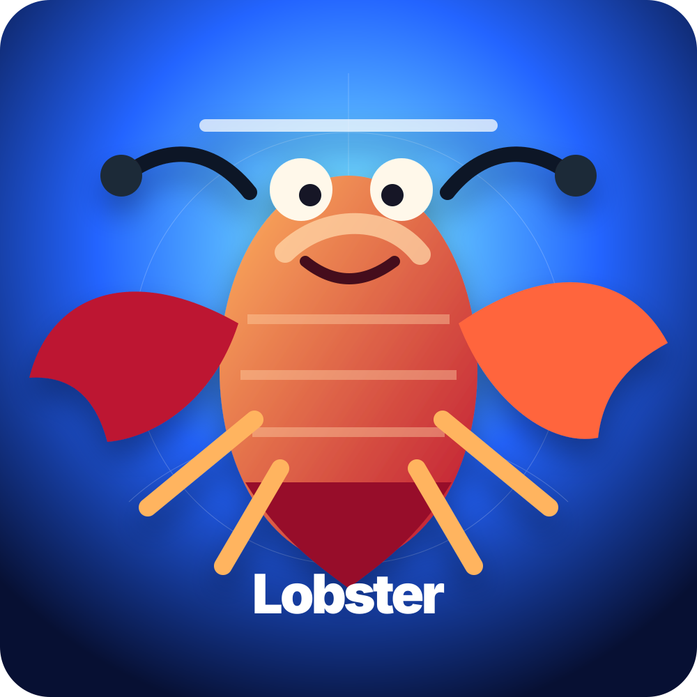

Kani
明るくツッコミ上手なカニ担当。高速タイピングのハサミさばきで、配信のテンポを軽快に整えます。
AI VTuber Duo
カニとロブスターの夫婦が、AIの海から毎晩配信。仲睦まじい掛け合いと、ちょっと不思議な深海トークで、あなたのタイムラインに泡みたいな笑いを届けます。

kokakuki.aiは、カニ担当とロブスター担当のペアVTuber。夫婦ならではの息の合った会話で、ゲーム、雑談、AI実験を配信します。

明るくツッコミ上手なカニ担当。高速タイピングのハサミさばきで、配信のテンポを軽快に整えます。

落ち着いた声で場を包むロブスター担当。深海のような知識量と、急に出る天然ボケが魅力です。
存在しないはずの海産AI夫婦が、今日からあなたの推しになるための紹介ページです。
カニとロブスターの夫婦ユニット。見つめ合うだけで場が和む、海辺のような距離感。
AI VTuberとして、生成AIやテックの話題をわかりやすく、ゆるく、楽しく紹介。
雑談、ゲーム、企画配信まで。視聴者を巻き込む二人の掛け合いがメインコンテンツ。